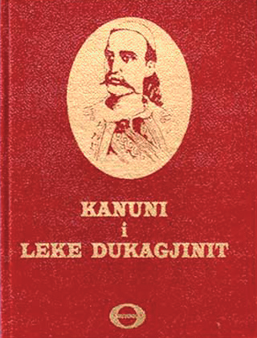

Normat dhe zakonet e popullit tim
Shpreh mendimin tënd
Analizoji fotografitë me informacionet e dhëna.
Rregullat dhe ligjet

Dikur nuk kishte kushtetuta, ligje e parlamente.
Që shoqëria dhe marrëdhëniet shoqërore të funksionin, njerëzit mblidheshin dhe vendosnin rregulla për sjelljet dhe raportet mes vete në mjedisin ku jetonin.
Ato janë quajtur norma shoqërore.
Normat shoqërore janë rregulla të sjelljes, të cilat kanë rregulluar marrëdhëniet mes njerëzve, kanë zgjidhur konfliktet mes tyre dhe kanë vënë rregull në shoqëri.
Ato janë vendosur nga njerëzit më me ndikim në shoqëri, pa e marrë mendimin e të tjerëve dhe të gjithë është dashur t’i zbatojnë.
Populli ynë, dikur, ka përdorur Kanunin, që është tërësi normash zakonore të pashkruara e të trashëguara brez pas brezi.
Dikur, mosmarrëveshjet janë zgjidhur sipas Kanunit, ndërsa sot ligjet përcaktojnë se si të sillen njerëzit në shoqëri.
Ligjet mbrojnë të drejtat dhe liritë tona.
Zakonet
Zakonet janë rregulla të pashkruara, që ndryshojnë sipas vendeve dhe popujve të ndryshëm.
Zakonet trashëgohen nga gjenerata në gjeneratë.
Zbatimi i tyre nuk është i detyrueshëm, por përsëri njerëzit janë mësuar t’i zbatojnë ato kohë pas kohe.
Njëri nga zakonet është prerja e flokëve të fëmijës - marrja e shejit, i cili kryhet nga një person i afërt i familjes që quhet nun.
Martesa me shkuesi
Situatë: Gjyshërit, me fotografinë e martesës në dorë, tregonin se në kohën e tyre martesat janë kryer me shkuesi.
Prindërit kanë propozuar një vajzë për djalin e tyre dhe kanë zgjedhur personin, i cili futej në mes të prindërve të djalit dhe të vajzës, që quhej mësiti ose shkuesi.
Kjo martesë me shkuesi do të realizohej, nëse burrat e familjes do të pajtoheshin për atë martesë.
Kur ata pajtoheshin për martesën e fëmijëve të tyre, caktonin datën e dasmës.
Përcjellja te dhëndri bëhej me ceremoni dhe organizohej dasmë tradicionale.
Sot, martesat kryhen vetëm me dëshirën e përbashkët të partnerëve.
Pagëzimi
Pagëzimi i një fëmije është një ngjarje e rëndësishme për çdo familje të krishterë katolike apo ortodokse.
Ai është bërë qysh nga kohët e vjetra.
Prindërit bënin përgatitjet për ditën e pagëzimit.
Ata zgjidhnin një çift besimtar, nunin dhe ndrikullën, që janë si prindërit e dytë për fëmijën, të cilët, në bashkëpunim me prindërit, zgjedhin emrin e fëmijës.
Ata i dhurojnë fëmijës zakonisht një monedhë apo stoli ari.
Shkruaj me fjalët e tua. Përgjigjet ruhen në këtë pajisje; ky ushtrim nuk vlerësohet me një përgjigje të vetme.